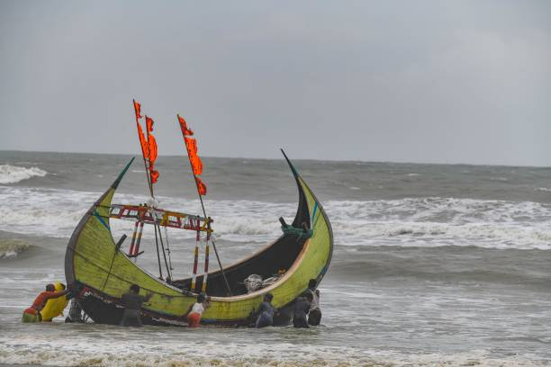
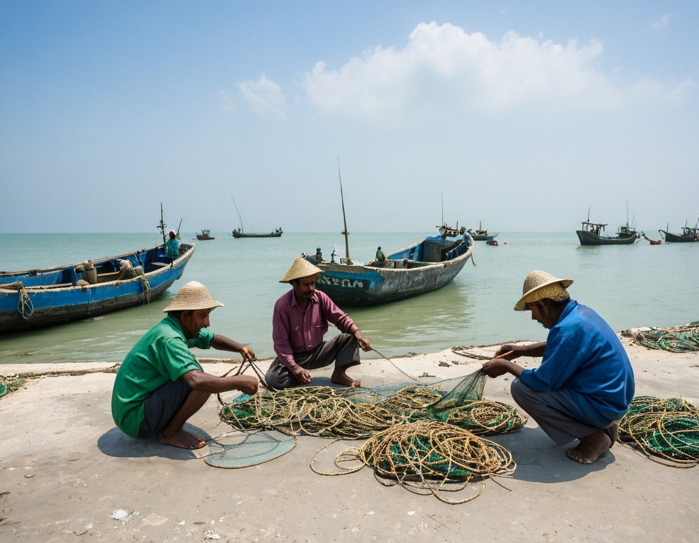

Environment
The health of our oceans and rivers is directly tied to the future of fishing. Overfishing, climate change, and pollution are significant threats to marine ecosystems. Fishermen are increasingly recognizing the need to protect these environments to secure their livelihoods.
Many fishermen now participate in conservation efforts, such as limiting their catch during breeding seasons or helping clean plastic waste from the water. These actions ensure that future generations of both fish and fishermen can thrive.
Get involved with ocean protection at Ocean Conservancy.
The Impact of Fishing on Ecosystems
Bangladesh’s rich aquatic ecosystems are home to an array of fish species, migratory birds, and unique plants. However, intensive fishing practices can disrupt these ecosystems, impacting not only fish populations but also the broader biodiversity of rivers and coastal areas. Traditional fishing practices often harmonize with nature, taking only what is needed, but modern practices can lead to overfishing and habitat degradation. In some areas, illegal fishing methods, like using banned nets that trap juvenile fish, put additional strain on ecosystems.
Environmental Concerns
Overfishing, water pollution, and climate change pose significant threats to Bangladesh’s waters. Chemical runoff from farms, industrial waste, and plastic pollution are all deteriorating the quality of these habitats. Climate change, especially, has led to rising temperatures and increased salinity in coastal areas, which affects fish spawning and growth. To combat these issues, the Bangladeshi government and conservation organizations are promoting sustainable fishing, enforcing fishing bans during breeding seasons, and encouraging the use of environment-friendly practices.